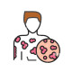

Wheal
Rx
1.Tab Hydroxyzine 25mg N=20 q12h
Or Elixir Diphenhydramine N=1 q6h
2.Lotion Calamine D N=1 q8h
If Need:
Amp Hydrocortisone100mg N=1 IM (1-2mg/kg)
Amp Chlorpheniramine N=1 IM (0.2mg/kg)
3.Tab Prednisolone 50mg N=15 daily for1w then taper
If Chronic:
1.Tab Montelukast 10mg N=30 daily
نکته: درموارد حاد حتما علائم حیاتی بیمار چک شود
نکته: در موارد شدید میتوانید از فرم تزریقی استفاده کنید و با نسخه خوراکی ترخیص کنید.
نکته: درصورت جنرالیزه بودن میتونید کورتون خوراکی به مدت یک هفته و سپس تیپر کنید.
نکته: در موراد مزمن مونته لوکاست
1️⃣ درماتیت تماسی
2️⃣ درماتیت آتوپیک
Drug eruption 3️⃣
4️⃣ اریتم مولتی فرم
5️⃣ پورپورا هنوخ شوئن لاین
6️⃣ پتریازیس روزه ا
7️⃣ گال
8️⃣ Serum sickness